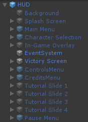

Project Overview
Fennec Peak is a 2-4 player, local multiplayer game. It was created in a seven week project with twelve team members. In the game, players fight each other to be the last one standing by knocking each other off of the steep edges that surround the level. To reach that goal, they must make use of their snappy movement, attacks and objects in the environment.
My role in this project was to assign and have a look out on time needed for programming tasks to be completed as well as implemented the more complicated systems while also helping out other team members with programming related issues. I have created and guided the team through a system for easier in-game menu editing and implemented the new Unity Input system without which, the local multiplayer in the game would not be possible. For the input system, I have designed a structure for other programmers to code in, in order to maintain modularity of the code and significantly reduce bottleneck caused by multiple programmers having to work on the same script.

UI System
The UI system has been written with the goal of allowing other team members to quickly easily set up fully working UI elements. Setting up a new UI page only requires the user to create an empty gameObject, add a premade component to it and fill it with desired UI elements. A UI page or element with custom functionality can also be created by creating a new class and connecting it with the already existing system.
Here will be a description of how it works in detail. My role in this project was to assign and have a look out on time needed for programming tasks to be completed as well as implemented the more complicated systems while also helping out other team members with programming related issues. I have created and guided the team through a system for easier in-game menu editing and implemented the new Unity Input system without which, the local multiplayer in the game would not be possible. For the input system, I have designed a structure for other programmers to code in, in order to maintain modularity of the code and significantly reduce bottleneck caused by multiple programmers having to work on the same script.
using System.Collections;
using System.Collections.Generic;
using UnityEngine;
using UnityEngine.EventSystems;
public class MenuManager : MonoBehaviour
{
[SerializeField] Menu startMenu;
[SerializeField] bool startPaused;
[HideInInspector] public Menu currentMenu;
Menu[] menus;
static List<Menu> menuHierarchy = new List<Menu>();
public static MenuManager instance;
static bool pausedState;
public static bool isPaused
{
get => pausedState;
set
{
pausedState = value;
if (value)
Time.timeScale = 0;
else
Time.timeScale = 1;
}
}
private void Awake()
{
DontDestroyOnLoad(gameObject);
//Singleton
if (!instance)
{
instance = this;
}
else
{
Debug.LogError("There can only be one MenuManager! Removing " + gameObject.name);
Destroy(gameObject);
return;
}
//Actual awake
isPaused = startPaused;
menus = GetComponentsInChildren<Menu>();
for (int i = 0; i < menus.Length; i++)
{
menus[i].gameObject.SetActive(false);
}
EnterMenu(startMenu);
}
public void EnterMenu(Menu menuObject)
{
menuHierarchy.Add(menuObject);
SetMenu(menuObject);
}
public void ReturnMenu()
{
if (menuHierarchy.Count > 1)
{
SetMenu(menuHierarchy[menuHierarchy.Count - 2]);
menuHierarchy.RemoveAt(menuHierarchy.Count - 1);
}
}
void SetMenu(Menu menuObject)
{
if (currentMenu)
currentMenu.gameObject.SetActive(false);
currentMenu = menuObject;
currentMenu.gameObject.SetActive(true);
}
public void ResetHierarchy()
{
menuHierarchy.Clear();
}
}